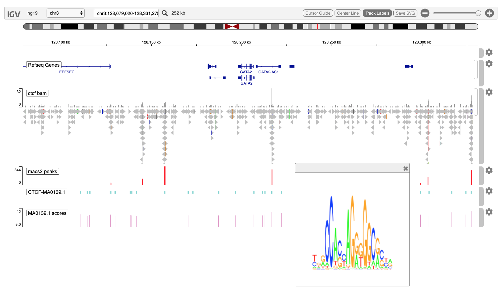

ctcfChipSeq.RmdThe igvR package provides easy programmic access in R to the web-based javascript library igv.js in order to create and display genome tracks in its richly interactive web browser visual interface. I am grateful to Jim Robinson, Douglass Turner and colleagues for their fine work.
In this vignette we present a somewhat contrived ChIP-seq study - contrived in that it is not organized around an actual research problem. Instead, this vignette demonstrates methods you would likely use to do visual QC and exploaratory data analysis a ChIP-seq experement.
We begin with an ENCODE study of CTCF binding on chromosome 3, hg19 reference genome, in the vicinity of the GATA2 gene. We will
This screenshot illustrates the final state of igv in your browser at the conclusion of the code found below.

Create the igvR instance, with all default parameters (portRange, quiet, title). Javascript and HTML is loaded into your browser, igv.js is initialized, a websocket connection between your R process and that web page is constructed, over which subsequent commands and data will travel.
Display 1.4MB on chr3 more or less centered on the GATA2 genes
showGenomicRegion(igv, "chr3:128,079,020-128,331,275")loc <- getGenomicRegion(igv)
which <- with(loc, GRanges(seqnames=chrom, ranges = IRanges(start, end)))
param <- ScanBamParam(which=which, what = scanBamWhat())
bamFile <- "~/github/ChIPseqMotifMatch/bulk/GSM749704/GSM749704_hg19_wgEncodeUwTfbsGm12878CtcfStdAlnRep1.bam"
file.exists(bamFile)
x <- readGAlignments(bamFile, use.names=TRUE, param=param)
track <- GenomicAlignmentTrack("ctcf bam", x, visibilityWindow=10000000, trackHeight=200) # 30000 default
displayTrack(igv, track)We ran MACS2 using docker and make, with this makefile:
DATADIR=/Users/paul/github/igvR/vignettes/macs2
BAM=GSM749704_hg19_wgEncodeUwTfbsGm12878CtcfStdAlnRep1.bam
NAME=GSM749704_hg19_chr19
run:
docker run -v $(DATADIR):/data/ fooliu/macs2 callpeak -t /data/$(BAM) -n $(NAME) --outdir data/This produces several files; we are interested only in the narrow peaks:
filename <- system.file(package="igvR", "extdata", "GSM749704_hg19_chr19_peaks.narrowPeak")
tbl.pk <- read.table(filename, sep="\t", header=FALSE, as.is=TRUE)[, c(1,2,3,5)]
dim(tbl.pk)
colnames(tbl.pk) <- c("chrom", "start", "end", "score")
loc <- getGenomicRegion(igv)
while(!is.list(loc)){
print(loc)
loc <- getGenomicRegion(igv)
}
printf("--- good loc obtained? ")
print(loc)
tbl.pk <- subset(tbl.pk, chrom==loc$chrom & start >= loc$start & end <= loc$end)
dim(tbl.pk)
track <- DataFrameQuantitativeTrack("macs2 peaks", tbl.pk, color="red", autoscale=TRUE)
displayTrack(igv, track)
dna <- with(loc, getSeq(BSgenome.Hsapiens.UCSC.hg19, chrom, start, end))
pfm.ctcf <- query(MotifDb, c("CTCF", "sapiens", "jaspar2018"), notStrings="ctcfl")
motif.name <- names(pfm.ctcf)[1]
pfm <- pfm.ctcf[[1]]
hits.forward <- matchPWM(pfm, as.character(dna), with.score=TRUE, min.score="80%")
hits.reverse <- matchPWM(reverseComplement(pfm), as.character(dna), with.score=TRUE, min.score="80%")
tbl.forward <- as.data.frame(ranges(hits.forward))
tbl.reverse <- as.data.frame(ranges(hits.reverse))
tbl.forward$score <- mcols(hits.forward)$score
tbl.reverse$score <- mcols(hits.reverse)$score
tbl.matches <- rbind(tbl.forward, tbl.reverse)
tbl.matches$chrom <- loc$chrom
tbl.matches$start <- tbl.matches$start + loc$start
tbl.matches$end <- tbl.matches$end + loc$start
with(tbl.matches, end-start)
enableMotifLogoPopups(igv)
tbl.matches$name <- paste0("MotifDb::", motif.name)
tbl.matches <- tbl.matches[, c("chrom", "start", "end", "name", "score")]
dim(tbl.matches)
head(tbl.matches)
track <- DataFrameAnnotationTrack("CTCF-MA0139.1", tbl.matches, color="random")
displayTrack(igv, track)
track <- DataFrameQuantitativeTrack("MA0139.1 scores", tbl.matches[, c(1,2,3,5)], color="random", autoscale=FALSE, min=8, max=12)
displayTrack(igv, track)